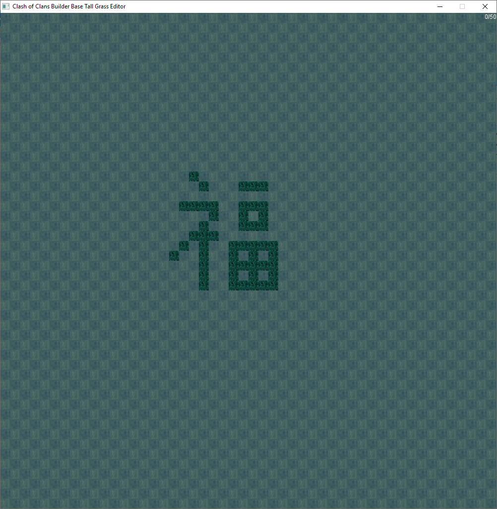
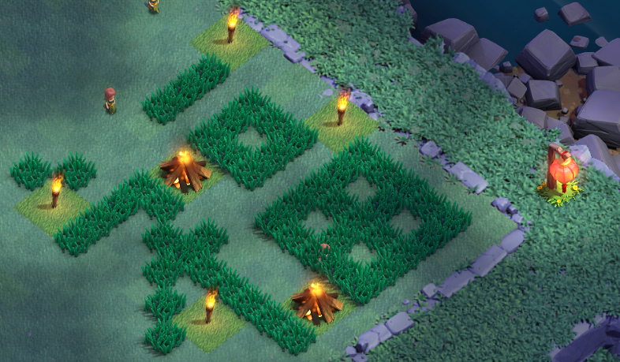

Clash of Clans Builder Base Tall Grass Editor
 This program helps you design tall grass patterns for your Builder Base in Clash of Clans. The desktop version was created using Python with the Pygame library. The browser version was made using HTML and JavaScript so it can be used without downloading anything.
Left click to draw or erase a single grass tile. Hold down the middle mouse button to continuously place grass tiles. Press space bar to clear all grass tiles. The numbers on the top tell you how many tiles you have left. The editor has 50x50 tiles.
In the Builder Base, tall grass grows from the sides of the Old Barbarian Statue, Ancient Barbarian Statue and existing tall grass. Tall grass cannot grow diagonally. At first, you can have up to 25 tall grass pieces in your Builder Base, but purchasing the Ancient Barbarian Statue for 250 gems increases the tall grass limit to 50 pieces. Every few hours, a tall grass tile will randomly spawn if possible.
OPEN IN BROWSER
DOWNLOAD
Instructions for Windows
- Click on the DOWNLOAD button and wait for the download to begin
- Save Grass Editor.zip to your computer
- Right click the file and select "Extract all..." to extract the files
- Open GrassEditor.exe